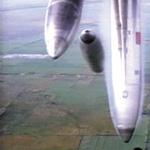

|
reno casino
- music (click on red links for MP3 samples)
discography as text file
- gybe!
yanqui u.x.o.
released november 4, 2002 (eu), november 11, 2002
constellation records (cst024)
CD:
- 09-15-00 [16:27]
- 09-15-00 [06:17]
- rockets fall on rocket falls [20:42]
- motherfucker=redeemer [21:22]
- motherfucker=redeemer [10:10]
double LP:
- 09-15-00 [22:40]
- rockets fall on rocket falls [20:43]
- motherfucker=redeemer [21:30]
-
- motherfucker=redeemer [15:25]
- untitled (george w. bush cut-up) [03:40]
 azadi! (various artists) azadi! (various artists)
released 2003
fire museum records (fm01)
1,17. "george bush cut up while talking"
from the museum fire records site: "a benefit compilation cd for the revolutionary association of the women of afghanistan (rawa). a diverse 2-cd set of avant-rock, electronic, world, experimental, jazz, folk, noise, improv, hip-hop, dancefloor, and modern classical music. featuring 34 artists from the sf bay area and other corners of the globe, over 2 hours of music." this appears to be the same additional piece of music featured on vinyl versions of yanqui u.x.o.
 lift yr. skinny fists like antennas to heaven! lift yr. skinny fists like antennas to heaven!
released october 23, 2000
constellation records (cst012), kranky (krank043)
- storm [22:32]
- lift yr. skinny fists, like antennas to heaven... [00:00 - 06:15]
- gathering storm [06:15 - 17:25]
- "welcome to barco am/pm..." [l.a.x.; 5/14/00] [17:25 - 18:40]
- cancer towers on holy road hi-way [18:40 - 22:32]
- static [22:35]
- terrible canyons of static [00:00 - 03:34]
- atomic clock [03:34 - 04:43]
- chart #3 [04:43 - 07:22]
- world police and friendly fire [07:22 - 17:10]
- [...+the buildings they are sleeping now] [17:10 - 22:35]
- sleep [23:17]
- murray ostril: "...they don't sleep anymore on the beach..." [00:00 - 01:10]
- monheim [01:10 - 13:24]
- broken windows, locks of love pt. III. / 3rd part [13:24 - 23:17]
- antennas to heaven [18:57]
- moya sings "baby-o"... [00:00 - 01:00]
- edgyswingsetacid [01:00 - 01:58]
- [glockenspiel duet recorded on a campsite in rhinebeck, n.y.] [01:58 - 02:45]
- "attention...mon ami...fa-lala-lala-la-la..." [55-St.Laurent] [02:45 - 04:03]
- she dreamt she was a bulldozer, she dreamt she was alone in an empty field [04:03 - 13:46]
- deathkamp drone [13:46 - 16:55]
- [antennas to heaven...] [16:55 - 18:57]
double cd released on kranky, double vinyl on constellation.
 slow riot for new zero kanada slow riot for new zero kanada
released march 8th, 1999
constellation records (cst006), kranky (krank034)
- moya [10:51]
- bbf3 [17:45]
cd released on kranky, vinyl (ep) on constellation. vinyl comes in a foil stamped jacket - side one (moya) plays at 45rpm, side two (BBF3) plays at 33rpm. cd doesn't name the two tracks or actually mention gybe! (other than in the liner notes). the hebrew lettering on cover says "tohu va vohu," a reference to biblical creationism. "bbf3" stands for "blaise bailey finnegan III," a variation on the name of former iron maiden vocalist, blaze bayley.
vpro radio session
broadcast february 25 and march 15, 1999
- she dreamt she was a bulldozer
- steve reich
- world police
- moya
this recording has never been officially released. the first 3 songs were broadcast on february 25, 1999 and the 4th was broadcast on march 15, 1999.
john peel session
recorded january 19, 1999
- hung over as the queen in maida vale
- monheim
- chart #3
- steve reich
this recording has never been officially released
 amazezine 7" amazezine 7"
released august, 1998
- godspeed you black emperor, "sunshine + gasoline"
- fly pan am, "l'espace au sol est redessine par d'immenses panneaux bleus"
a 7" that came free with issue #4 of the montréal-based amazezine. the first 550 copies were pressed on white vinyl, all copies after that pressed on black. the 'zine also contains an interview with the band.
 f# a# oo f# a# oo
released june 8th, 1998
kranky (krank027)
- the dead flag blues [16:27]
- the dead flag blues (intro) [00:00 - 06:37]
- slow moving trains [06:37 - 10:10]
- the cowboy... [10:10 - 14:27]
- (;outro)... [14:27 - 16:27]
- east hastings [17:58]
- nothing's alrite in our life / dead flag blues (reprise) [00:00 - 01:35]
- the sad mafioso... [01:35 - 12:19]
- drugs in tokyo / black helicopter [12:19 - 17:58]
- providence [21:15]
- divorce & fever... [00:00 - 02:44]
- dead metheny.. [02:44 - 10:51]
- kicking horse on brokenhill [10:51 - 16:44]
- string loop manufactured during downpour... [16:44 - 21:15]
j.l.h. outro [24:54 - 29:02]
re-issue of the constellation lp. remastered and changed in some areas, with some new material, and some material missing. completely different booklet/cover/liner notes, but as with the lp, each track is made up of several different segments
 f# a# oo f# a# oo
released october 1997
constellation records (cst003)
- nervous, sad, poor... [21:00]
- bleak, uncertain, beautiful... [17:40]
initially limited to 500 numbered copies, then repressed. hand-made jacket, with one of three actual photographs glued on to the front. comes with a bag of goodies, inlcuding a penny flattened by a train. each track fills a side, and is made up of different pieces. side b runs out into a locked groove.
 all lights fucked on the hairy amp drooling all lights fucked on the hairy amp drooling
released on cassette in 1994 in a limited quantity of 33
side a
- drifting intro open
- shot thru tubes
- three three three
- when all the furnaces exploded
- beep
- hush
- son of a diplomat, daughter of a politician
- glencairn 14
- $13.13
- loose the idiot dogs
- diminishing shine
- random luvly moncton blue(s)
- 13. dadmomdaddy
side b
- 333 frames per second
- revisionist alternatif wounds to the hair-cut hit head
- ditty for moya
- buried ton
- and the hairy guts shine
- hoarding
- deterior 23
- all angels gone
- deterior 17
- deterior three
- devil's in the church
- no job
- dress like shit
- perfumed pink corpses from the lips of ms. celine dion
the only document of early godspeed - a self-released cassette limited to 33 copies.
- other projects
 thee silver mountain reveries, "the 'pretty little lightning' e.p." thee silver mountain reveries, "the 'pretty little lightning' e.p."
to be released may 10, 2004
constellation records (cst030)
- more action! less tears! [05:20]
- microphones in the trees [09:47]
- pretty little lightning paw [10:00]
- there's a river in the valley made of melting snow [05:08]
originally available only on CD at performances by the silver mt zion memorial orchestra during their 2004 european tour.
 the silver mount zion memorial orchestra and tra-la-la band (with choir), "'this is our punk-rock,' thee rusted satellites gather+sing" the silver mount zion memorial orchestra and tra-la-la band (with choir), "'this is our punk-rock,' thee rusted satellites gather+sing"
released august 25, 2003 (eu), september 2, 2003
constellation records (cst027)
- sow some lonesome corners so many flowers bloom [16:27]
- babylon was built on fire/starsnostars [14:44]
- american motor over smoldered field [12:05]
- goodbye desolate railyard [14:25]
 the silver mount zion memorial orchestra and tra-la-la band, "born into trouble as the sparks fly upward" the silver mount zion memorial orchestra and tra-la-la band, "born into trouble as the sparks fly upward"
released october 15, 2001
constellation records (cst018)
- sister! brother! small boats of fire are falling from the sky [9:07]
- this gentle heart's like shot birds fallen [5:47]
- built then burnt (hurrah! hurrah!) [5:41]
- take these hands and throw them in the river [6:58]
- could've moved mountains... [10:59]
- tho you are gone i still walk miles with you [4:48]
- c'mon come on (loose an endless longing) [8:06]
- the triumph of our tired eyes [6:54]
the silver mount zion memorial orchestra's second release
 a silver mt. zion, "he has left us alone but shafts of light sometimes grace the corner of our bedrooms" a silver mt. zion, "he has left us alone but shafts of light sometimes grace the corner of our bedrooms"
released march 27, 2000
constellation records (cst009)
- "lonely as the sound of lying on the ground of an airplane going down." [23:14]
- broken chords can sing a little. [8:39]
- sit in the middle of three galloping dogs. [5:08]
- stumble then rise on some awkward morning. [6:04]
- movie(never made). [3:23]
- "the world is sickSICK;(so kiss me quick): [23:52]
- 13 angels standing guard 'round the side of your bed. [7:22]
- long march rocket or doomed airliner. [0:05]
- blown-out joy from heaven's mercied hole. [9:47]
- for wanda. [6:38]
according to constellation website, "A Silver Mt. Zion is a group led by founding godspeed you black emperor! guitarist Efrim, together with other godspeed members Sophie and Thierry. The music was written by Efrim and arranged by the trio. Efrim plays mostly piano, some guitar, and provides the vocals on the one lyrical piece on their debut. Thierry contributes upright and electric bass, and Sophie plays violin. To some extent, A Silver Mt. Zion was born out of a desire on the part of these godspeed players to work in a smaller musical ensemble; in effect, to escape some of the constraints that often accompany writing and arranging music democratically with nine musicians. As well, Efrim simply wanted a vehicle to realise some of his own musical ideas that would not necessarily work well within the context of godspeed. "
return home
|